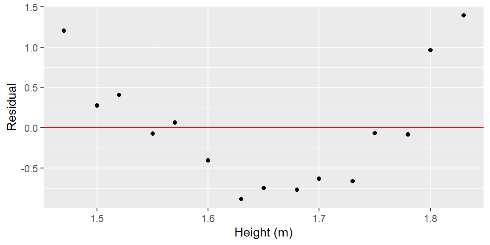
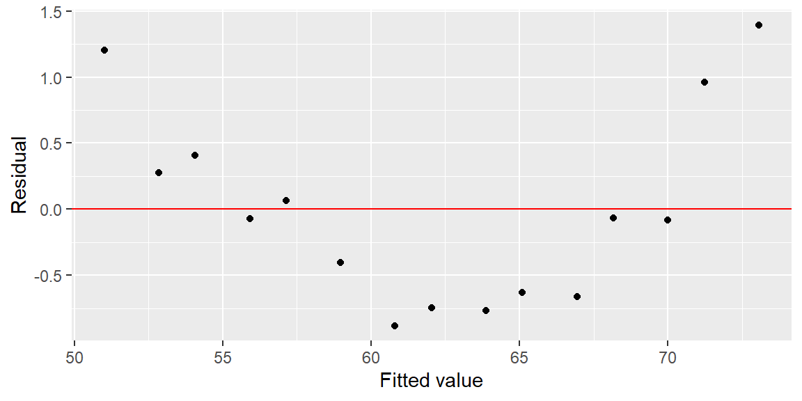
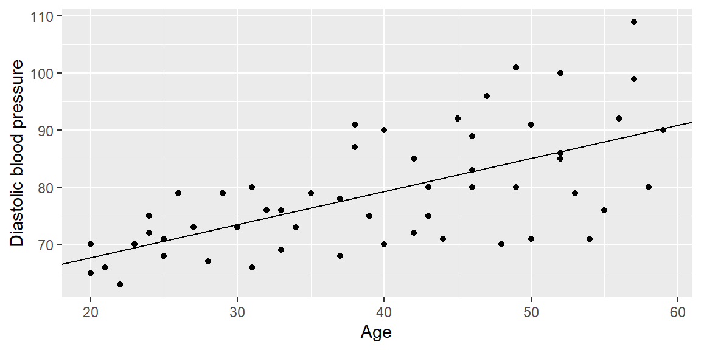
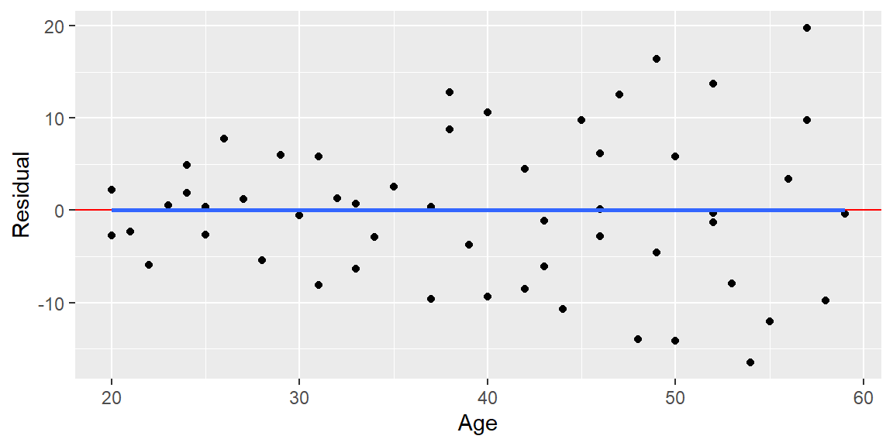
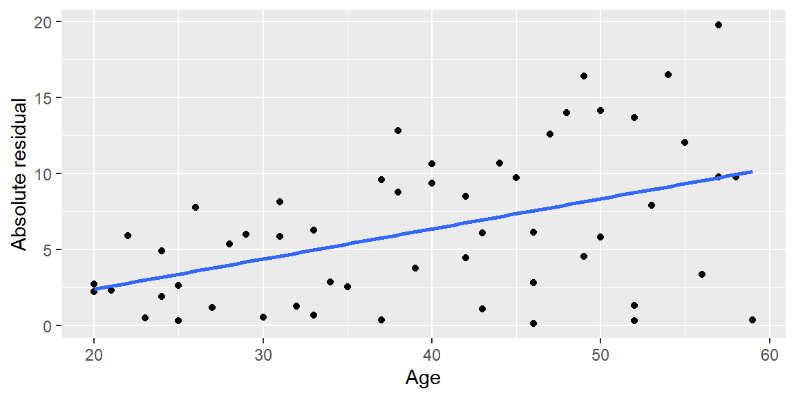
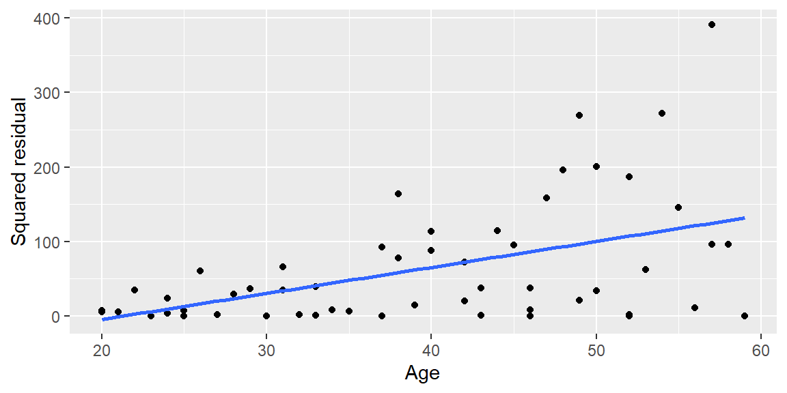

7Checking the Linearity and Constant Variance Assumptions
“…the statistician knows…that in nature there never was a normal distribution, there never was a straight line, yet with normal and linear assumptions, known to be false, he can often derive results which match, to a useful approximation, those found in the real world.” - George Box
Regression assumptions are not usually true in a perfect mathematical sense. The practical question is whether the assumptions are reasonable enough for the fitted model, standard errors, intervals, and tests to be useful.
This chapter focuses on two assumptions:
the mean relationship between \(x\) and \(y\) is linear, and
the error variance is constant across values of \(x\).
7.1 Residual Diagnostics
7.1.1 Model Assumptions
Recall the assumptions for the simple linear regression model:
The mean of the probability distribution of \(\varepsilon\) is 0.
The variance of the probability distribution of \(\varepsilon\) is constant for all settings of the predictor variable \(x\).
The probability distribution of \(\varepsilon\) is normal.
The errors associated with different observations are independent.
After fitting the model, we need to check whether these assumptions appear reasonable.
NoteDiagnostics are about reasonableness, not perfection
Regression diagnostics rarely give a perfect yes/no answer. A diagnostic plot helps us decide whether an assumption violation is serious enough to affect the analysis.
Small imperfections are expected. Large, systematic patterns are the warning signs.
7.1.2 Residuals
We check the assumptions of the model by examining the residuals: \[
\begin{align}
e_i=y_i-\hat{y}_i.
\end{align}
\tag{7.1}\]
We do this because the model assumptions are about the unobserved error terms \(\varepsilon_i\). Since we do not observe \(\varepsilon_i\), we use residuals \(e_i\) as observable approximations.
NoteErrors versus residuals
The true error term is \[\begin{align*}
\varepsilon_i = y_i - E(y_i),
\end{align*}\] which depends on the unknown population regression line.
The residual is \[\begin{align*}
e_i = y_i-\hat y_i,
\end{align*}\] which depends on the fitted regression line from the sample.
Diagnostics use residuals because errors are not observed.
7.1.3 Properties of Residuals
For the least squares line with an intercept, the residuals have several useful properties: \[
\begin{align}
\sum e_i &=0\\
\sum x_ie_i &=0\\
\sum \hat{y}_ie_i &=0\\
\sum y_i &=\sum \hat{y}_i.
\end{align}
\tag{7.2}\]
From Equation 7.2, the mean of the residuals is \[
\begin{align}
\bar e=0.
\end{align}
\tag{7.3}\]
The residual mean square is \[
\begin{align}
\frac{\sum (e_i-\bar e)^2}{n-2}
&=\frac{\sum e_i^2}{n-2}\\
&=\frac{SSE}{n-2}\\
&=MSE\\
&=s^2.
\end{align}
\tag{7.4}\]
ExampleWhy residuals sum to zero
Suppose a fitted regression line has residuals \[\begin{align*}
2,\quad -1,\quad 3,\quad -4.
\end{align*}\]
These residuals sum to 0: \[\begin{align*}
2+(-1)+3+(-4)=0.
\end{align*}\]
This does not mean the model is good. It only means the least squares line with an intercept balances positive and negative residuals. A residual plot can still show curvature, nonconstant variance, outliers, or other problems even when the residuals sum to 0.
7.1.4 Semistudentized Residuals
It is often helpful to put residuals on a standardized scale. Since Equation 7.3 tells us \(\bar e=0\), a simple standardized version is \[\begin{align*}
e_i^*
&=\frac{e_i-\bar e}{\sqrt{MSE}}\\
&=\frac{e_i}{\sqrt{MSE}}.
\end{align*}\]
We call \(e_i^*\) the semistudentized residual because \(\sqrt{MSE}\) is only an approximation to the standard error of an individual residual. The exact standard error depends on the predictor value. We will discuss fully studentized residuals later.
NoteWhy standardize residuals?
Raw residuals are measured in the units of the response variable. Semistudentized residuals put residuals on a scale that is easier to compare across observations.
A semistudentized residual near 0 means the observation is close to the fitted line. Values with larger absolute magnitude are farther from the fitted line relative to the model’s typical residual size.
7.2 The Linearity Assumption
7.2.1 Residual Plots
We can check the linearity assumption by plotting the residuals versus the predictor variable or by plotting the residuals versus the fitted values.
We usually begin with a scatterplot of \(y\) versus \(x\) to decide whether a straight-line relationship appears appropriate. Sometimes, however, curvature is easier to see in a residual plot than in the original scatterplot.
In a residual plot, we hope to see residuals randomly scattered around 0 with no systematic pattern.
NoteReading residual plots for linearity
For the linearity assumption:
Pattern in residual plot
Possible interpretation
Random scatter around 0
Linear form may be reasonable
Clear curve
Mean relationship may not be linear
Several large isolated residuals
Possible outliers or unusual observations
Pattern that changes over time/order
Possible independence issue
This chapter focuses on the first two patterns. Normality, independence, and outliers are discussed in later chapters.
ExampleVisual guide to residual plot patterns
The plots below show three common residual-plot patterns.
library(tidyverse)set.seed(3386)n_diag<-90x_diag<-seq(0, 10, length.out =n_diag)ideal_resid<-rnorm(n_diag, mean =0, sd =1)curve_signal<-0.20*(x_diag-5)^2curve_resid<-curve_signal-mean(curve_signal)+rnorm(n_diag, mean =0, sd =0.55)funnel_resid<-rnorm(n_diag, mean =0, sd =0.25+0.18*x_diag)residual_patterns<-tibble( x =rep(x_diag, times =3), residual =c(ideal_resid, curve_resid, funnel_resid), pattern =rep(c("Ideal: random scatter","Curvature: nonlinear mean","Funnel: nonconstant variance"), each =n_diag))ggplot(residual_patterns, aes(x =x, y =residual))+geom_point(alpha =0.75)+geom_hline(yintercept =0, color ="red")+facet_wrap(~pattern, nrow =1)+labs(x ="Predictor or fitted value", y ="Residual")
The first plot is what we hope to see: random scatter around 0 with roughly constant spread. The second plot suggests the straight-line mean structure is missing curvature. The third plot suggests the error variance changes across the range of the predictor.
WarningLook for patterns, not one odd point
A single unusual residual does not automatically mean the linearity or constant variance assumption is violated.
One odd point may be an outlier, a data-entry issue, or simply an unusual observation. Assumption concerns usually come from systematic patterns: curves, funnels, clusters, or trends that involve many observations.
Example 7.1
ExampleWeight and height residual diagnostics
In this example, we consider the weights, in kg, and heights, in m, of 16 women ages 30-39. The dataset is from Kaggle.
Here, Weight is the response and Height is the predictor. We fit the simple linear regression model:
fit_hw<-lm(Weight~Height, data =height_weight)ggplot(height_weight, aes(x =Height, y =Weight))+geom_point()+geom_smooth(method ="lm", formula =y~x, se =FALSE)+labs(x ="Height (m)", y ="Weight (kg)")
Now create residual diagnostic plots:
height_weight_diag<-height_weight|>mutate( yhat =fitted(fit_hw), e =resid(fit_hw), e_star =e/sigma(fit_hw))ggplot(height_weight_diag, aes(x =Height, y =e))+geom_point()+geom_hline(yintercept =0, col ="red")+labs(x ="Height (m)", y ="Residual")

ggplot(height_weight_diag, aes(x =yhat, y =e))+geom_point()+geom_hline(yintercept =0, col ="red")+labs(x ="Fitted value", y ="Residual")

The two residual plots contain the same information in simple linear regression because the fitted values are a linear function of the one predictor. We look for obvious curvature or other systematic structure. A random cloud around 0 supports the linearity assumption.
7.2.2 Plotting against Predictor Variable or Fitted Values
In simple linear regression, plotting residuals against \(x\) gives the same information as plotting residuals against \(\hat y\), because \(\hat y=b_0+b_1x\) is a linear transformation of \(x\).
When multiple predictor variables are used, plotting residuals against individual predictor variables and plotting residuals against fitted values can provide different information. It is usually helpful to examine both.
7.2.3 Data Transformation for Linearity
When the linearity assumption does not appear reasonable, we may consider a nonlinear model or a transformation of \(x\) or \(y\).
If the main concern is the form of the relationship between \(x\) and the mean of \(y\), transforming \(x\) is often a good first option. Common transformations include \[\begin{align*}
\sqrt{x},\qquad \log(x),\qquad x^p,
\end{align*}\] where \(p\) is some real number.
Transforming the response variable \(y\) can also help in some cases, but it may affect other assumptions, such as constant variance or normality of the errors.
Sometimes a transformation is not enough. In that case, the simple linear regression model may need to be replaced by a more appropriate nonlinear model.
ExampleCurvature suggests a different mean structure
Suppose a residual plot shows negative residuals at low values of \(x\), positive residuals in the middle, and negative residuals again at high values of \(x\).
That pattern suggests the fitted line is missing curvature. The issue is not simply that a few points are unusual; the residuals are systematically arranged.
Possible remedies include transforming \(x\), adding a quadratic term such as \(x^2\), or using a nonlinear model. The right choice depends on the scientific context and the shape of the relationship.
7.3 Homogeneity of Variance
7.3.1 Residual Plots
As before, we can plot residuals against the predictor variable \(x\) or against the fitted values \(\hat y\) to help determine whether the variance of the error term \(\varepsilon\) is constant.
When the variance is constant, we say the model has homoscedasticity. When the variance is nonconstant, we say the model has heteroscedasticity.
7.3.2 Absolute Residuals and Squared Residuals
When examining a residual plot for nonconstant variance, we look for clear changes in the spread of the residuals. One common pattern is a cone or funnel shape.
Because variance is about spread rather than sign, it is often helpful to plot absolute residuals or squared residuals versus the predictor or fitted values.
NoteWhat nonconstant variance looks like
For constant variance, the vertical spread of the residuals should be roughly similar across the range of \(x\) or fitted values.
Warning signs include:
residuals fanning out as \(x\) increases,
residuals narrowing as \(x\) increases,
one part of the plot having much more vertical spread than another part.
Example 7.2
ExampleDiastolic blood pressure data
We will model diastolic blood pressure by age for 54 healthy adult women. The data are from Kutner et al. (2004), Applied Linear Statistical Models.
library(tidyverse)blood_pressure<-read.table("bloodpressure.txt", header =TRUE)fit_bp<-lm(dbp~age, data =blood_pressure)ggplot(blood_pressure, aes(x =age, y =dbp))+geom_point()+geom_abline( slope =coef(fit_bp)[2], intercept =coef(fit_bp)[1])+labs(x ="Age", y ="Diastolic blood pressure")

The scatterplot already suggests that the spread of dbp may increase with age.
blood_pressure_diag<-blood_pressure|>mutate( e =resid(fit_bp), yhat =fitted(fit_bp), abs_e =abs(e), squared_e =e^2)ggplot(blood_pressure_diag, aes(x =age, y =e))+geom_point()+geom_hline(yintercept =0, color ="red")+geom_smooth(method ="lm", formula =y~x, se =FALSE)+labs(x ="Age", y ="Residual")

ggplot(blood_pressure_diag, aes(x =age, y =abs_e))+geom_point()+geom_smooth(method ="lm", formula =y~x, se =FALSE)+labs(x ="Age", y ="Absolute residual")

ggplot(blood_pressure_diag, aes(x =age, y =squared_e))+geom_point()+geom_smooth(method ="lm", formula =y~x, se =FALSE)+labs(x ="Age", y ="Squared residual")

The residual plots show a cone-like pattern: the spread of residuals appears to increase as age increases. This is evidence against the constant variance assumption.
7.3.3 Tests for Heteroscedasticity
We can set up a hypothesis test for heteroscedasticity: \[\begin{align*}
H_0 &: \text{the variance is constant}\\
H_a &: \text{the variance is nonconstant}.
\end{align*}\]
The procedures below usually test for variance that increases or decreases over the values of \(x\). That is, they are designed to detect patterns such as cone-shaped residual plots.
WarningPlots come first
Formal tests can be useful, but they should not replace diagnostic plots.
With small samples, tests may miss important visual patterns. With very large samples, tests may flag tiny departures that do not matter much in practice. Residual plots help us judge the size and shape of the problem.
7.3.4 Levene’s Test and Brown-Forsythe Test
Levene’s test starts by dividing the range of the predictor variable \(x\) into \(k\) intervals. For each interval, we calculate the mean residual in that interval, denoted \(\bar e_j\).
Then we define the absolute deviation from the group mean: \[
d_{ij}=|e_{ij}-\bar e_j|.
\]
An ANOVA F-test is performed on the \(k\) groups. A small p-value is evidence that the variance is nonconstant across values of \(x\).
The Brown-Forsythe test is a modification of Levene’s test that uses the median residual in each group instead of the mean. This makes the procedure more robust to nonnormal errors.
7.3.5 Breusch-Pagan Test
A second test for nonconstant variance is the Breusch-Pagan test. This test assumes the error variance is related to the predictor values. One way to motivate the idea is \[
\ln(\sigma_i^2)=\gamma_0+\gamma_1x_i.
\]
In practice, the test asks whether the residual variation systematically changes with the predictor or fitted values. A small p-value is evidence of nonconstant variance.
Example 7.3
ExampleBreusch-Pagan test for the blood pressure data
Let’s examine the blood pressure data from Example 7.2 again.
In R, the Breusch-Pagan test can be conducted with the bptest() function from the lmtest package.
if(requireNamespace("lmtest", quietly =TRUE)){lmtest::bptest(fit_bp)}else{"Install the lmtest package to run lmtest::bptest()."}
studentized Breusch-Pagan test
data: fit_bp
BP = 12.541, df = 1, p-value = 0.0003981
For these data, a small p-value would support what we saw in the residual plots: the variance does not appear constant across different values of age.
ExampleChoosing a diagnostic for the problem
Different residual displays answer different diagnostic questions.
Diagnostic display
Main question
Residuals vs. predictor
Is the mean relationship linear in this predictor? Does spread change across \(x\)?
Residuals vs. fitted values
Is there overall curvature or changing spread in the fitted model?
Absolute residuals vs. predictor
Does the size of the residuals increase or decrease with \(x\)?
Squared residuals vs. predictor
Is residual variance systematically related to \(x\)?
The goal is not to memorize a separate rule for every plot. The goal is to ask: Is there a systematic pattern left over after fitting the model?
7.4 What to Do When Diagnostics Show Problems
Finding a diagnostic problem does not automatically tell us the solution. The response should depend on the pattern, the context, and the goal of the analysis.
Diagnostic concern
Possible next step
Curved residual pattern
Transform \(x\), add a polynomial term such as \(x^2\), or consider a nonlinear model.
Nonconstant variance
Transform \(y\), use weighted least squares, or use methods that adjust standard errors.
One unusual residual
Check for data-entry errors, examine whether the observation is influential, and consider a sensitivity analysis.
Many unusual residuals
Reconsider the model form, omitted variables, data quality, or whether one model is appropriate for all observations.
Pattern over time or order
Check independence; consider time-series methods or models that account for dependence.
The goal is not to force the data to satisfy assumptions at all costs. The goal is to build a model that is honest, useful, and appropriately qualified.
NotePreview: robust standard errors
When the mean structure is reasonable but the variance is not constant, one possible remedy is to use robust standard errors.
Robust standard errors do not change the fitted line. Instead, they adjust the estimated standard errors used for inference so that tests and confidence intervals are less sensitive to heteroscedasticity.
This is not a magic fix for every problem. If the mean relationship is wrong, robust standard errors do not repair the fitted model. They are mainly a tool for handling nonconstant variance when the model form is otherwise reasonable.
7.5 Recap
This chapter introduced residual diagnostics for checking the linearity and constant variance assumptions.
Idea
Meaning
Residual
The observed difference between an actual response and a fitted value, \(e_i=y_i-\hat y_i\).
Residual diagnostics
Tools for checking whether the model assumptions appear reasonable.
Linearity assumption
The mean response follows a straight-line relationship with the predictor.
Residual plot
A plot of residuals against the predictor or fitted values.
Semistudentized residual
A residual divided by \(\sqrt{MSE}\), giving a rough standardized scale.
Homoscedasticity
Constant error variance across values of the predictor.
Heteroscedasticity
Nonconstant error variance across values of the predictor.
Cone/funnel pattern
A residual plot pattern suggesting nonconstant variance.
Breusch-Pagan test
A formal test for nonconstant variance.
Systematic pattern
A repeated structure in the residuals, such as curvature or changing spread, that may indicate an assumption problem.
Robust standard errors
A later-course method for adjusting inference when variance is nonconstant but the mean model is otherwise reasonable.
7.6 Check your understanding
NoteProblems
Why do we examine residuals instead of the true errors \(\varepsilon_i\)?
What should a residual plot look like if the linearity assumption is reasonable?
A residual plot shows a clear U-shaped pattern. Which assumption is most directly in question?
What is the difference between homoscedasticity and heteroscedasticity?
Why might absolute residuals or squared residuals be useful when checking constant variance?
What does a cone-shaped residual plot suggest?
Why should diagnostic plots be examined before relying on formal tests such as the Breusch-Pagan test?
If a Breusch-Pagan test has a small p-value, what does that suggest? What does it not tell us by itself?
Why might transforming \(x\) help with a linearity problem?
Why can transforming \(y\) affect more than just the linearity assumption?
Why is one unusual residual not, by itself, enough to conclude that an assumption has failed?
If a residual plot shows curvature, what are two possible next steps?
What do robust standard errors change, and what do they not change?
TipSolutions
Errors are unobserved. The true errors compare observations to the unknown population regression line. Residuals compare observations to the fitted sample regression line, so residuals are observable after fitting the model.
Random scatter around 0. If linearity is reasonable, the residuals should show no systematic curve or pattern. They should be scattered around the horizontal line at 0.
Linearity. A U-shaped residual plot suggests that the straight-line model is missing curvature in the mean relationship.
Constant versus changing spread. Homoscedasticity means the error variance is constant across values of \(x\). Heteroscedasticity means the error variance changes across values of \(x\).
Variance is about size, not sign. Absolute and squared residuals remove the sign of the residuals, making it easier to see whether residual magnitude changes with \(x\) or fitted values.
Nonconstant variance. A cone or funnel shape suggests that residual spread increases or decreases across the range of \(x\), which is evidence against the constant variance assumption.
Plots show shape and practical importance. Formal tests give p-values, but plots show the type, direction, and severity of the pattern. Tests can miss problems in small samples or flag minor issues in large samples.
Evidence of changing variance. A small Breusch-Pagan p-value suggests nonconstant variance. By itself, it does not identify the best remedy, prove the mean relationship is correct, or check all other assumptions.
It can straighten the mean relationship. If the relationship between \(x\) and the mean of \(y\) is curved, transforming \(x\) can sometimes make the relationship more nearly linear.
It changes the response scale. Transforming \(y\) changes the scale on which the errors are measured and interpreted. This can affect constant variance, normality, and the interpretation of model coefficients.
We look for systematic evidence. One unusual residual may indicate an outlier, data-entry issue, or unusual observation. Assumption violations are usually diagnosed from patterns involving many observations, such as curves or changing spread.
Change the mean structure. Possible next steps include transforming \(x\), adding a polynomial term such as \(x^2\), or using a nonlinear model. The choice should be guided by the plot and by the context of the problem.
They adjust inference, not the fitted line. Robust standard errors change the estimated standard errors used in tests and confidence intervals. They do not change the fitted regression coefficients, and they do not fix a badly misspecified mean relationship.